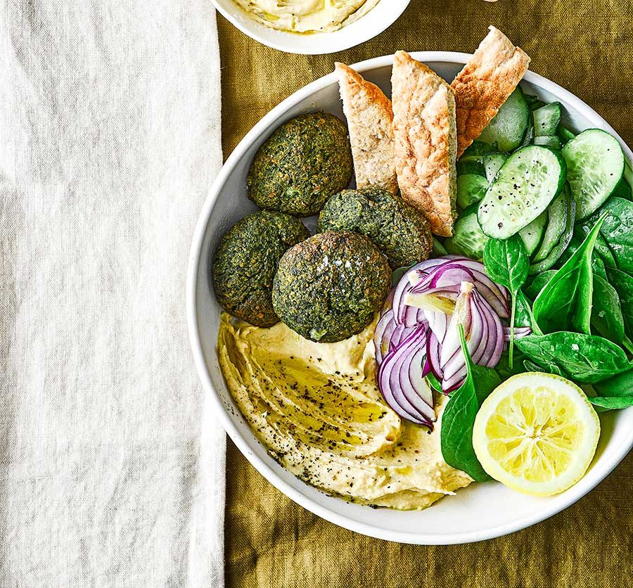

Spinach Falafel and Hummus Bowl
Ingredients
150g baby spinach:
- 1⁄2 cucumber, sliced
- 1 red onion, finely sliced
- 4 wholemeal pittas, toasted, to serve
For the falafel:
- 150g baby spinach
- 400g can chickpeas, drained
- 1 garlic clove, chopped
- 1 tsp ground cumin
- 1⁄2 small bunch of parsley, finely chopped
- 2 tbsp plain flour
- 1 tbsp olive oil, plus extra for rolling
For the hummus:
- 400g chickpeas, drained
- 40ml olive oil, plus extra to serve
- 1 garlic clove, roughly chopped
- 1 lemon, juiced, plus extra to serve (optional)
- 2 tbsp tahini
Recipe
- Heat the oven to 190C/170C fan/gas 5. Line a baking sheet with non-stick parchment. Put all the
falafel ingredients, except for the oil, in a food processor and season lightly. Pulse until you
have a rough mix.
- Oil your hands lightly, then take tablespoons of the falafel mix, roll into around 16 balls and
put on the baking sheet. Press each one down slightly with the palm of your hand. Brush using
the 1 tbsp oil and bake for 20-25 mins until firm and golden, turning halfway through.
- While the falafel is cooking, make the hummus. Put all of the hummus ingredients into a food
processor with 50ml of water and blitz until smooth and silky.
- Put the spinach, cucumber, red onion and falafel in different sections of each bowl, alongside
some hummus, then drizzle with the extra olive oil. Grind over some black pepper. Serve with the
pittas on the side and more lemon for squeezing over, if you like.
